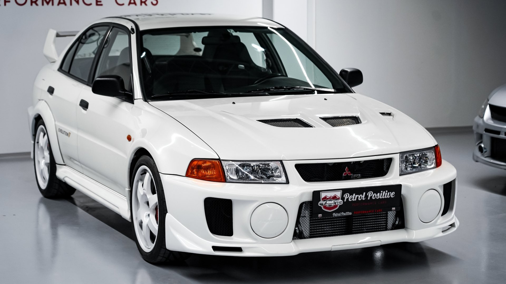
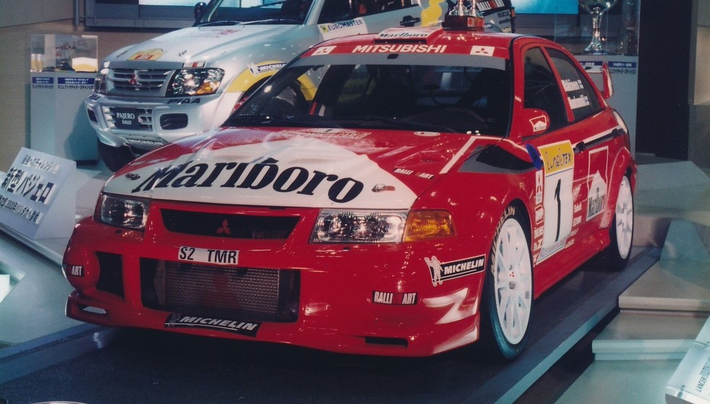
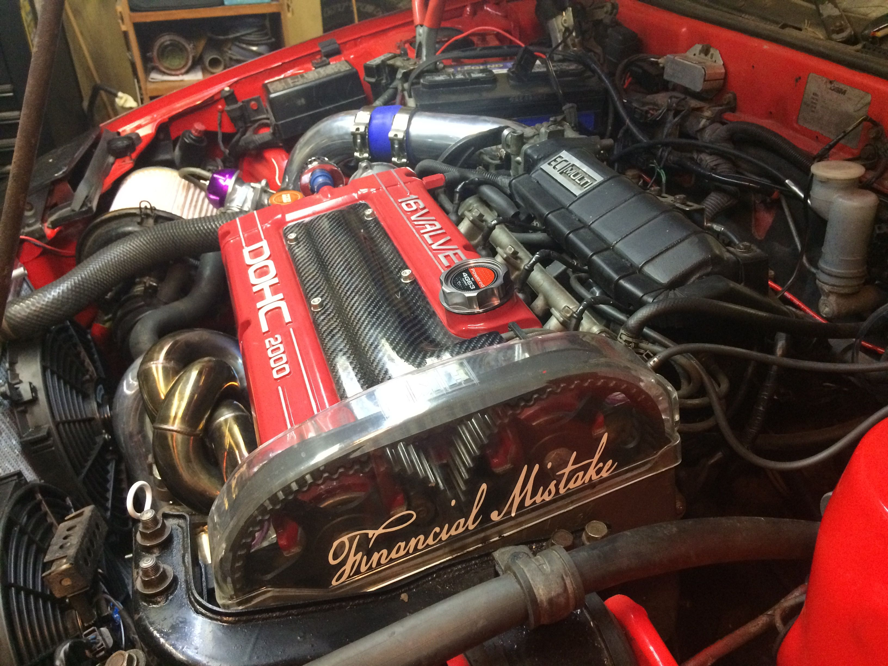
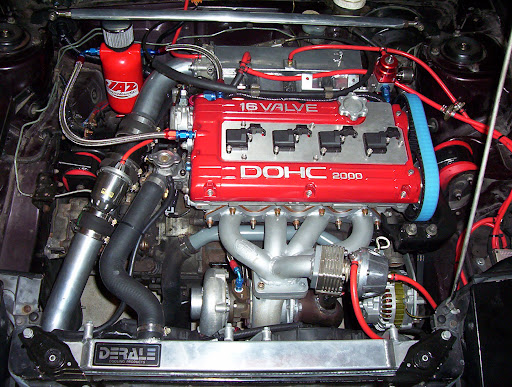

-
Styl i Design:
Evo VI charakteryzuje się agresywnym i muskularnym wyglądem, który odzwierciedla jego doskonałe właściwości prowadzenia. Jego charakterystyczna sylwetka, szerokie nadkola, duży spojler tylny i charakterystyczne wloty powietrza nadają mu sportowy wygląd. Choć wygląd Evo VI jest zbliżony do poprzednich generacji, ten model otrzymał kilka zmian wizualnych, w tym nowe reflektory przednie i tylne, które nadają mu bardziej agresywny wygląd.
  -
Silnik:
Evo VI jest napędzany przez potężny silnik o oznaczeniu 4G63t, jest to rzędowy czterocylindrowy, turbodoładowany, o pojemności 2.0 litra. Silnik ten oferuje imponującą moc i moment obrotowy, co przekłada się na doskonałe osiągi. Dzięki zastosowaniu zaawansowanej technologii turbodoładowania oraz intercoolerów, silnik Evo VI jest bardziej responsywny i wydajny niż poprzednie wersje.mpreza WRX STI była napędzana przez potężny silnik bokser o pojemności 2.0 lub 2.5 litra, z turbodoładowaniem i intercoolerem. Silniki te oferowały imponującą moc i moment obrotowy, co zapewniało dynamiczną jazdę i świetne osiągi. Jedną z charakterystycznych cech silnika bokser było jego niskie położenie i równomierna dystrybucja masy, co przyczyniało się do doskonałych właściwości prowadzenia.
  -
Napęd na wszystkie koła:
Mitsubishi Lancer Evolution VI jest wyposażony w zaawansowany system napędu na wszystkie koła (Super All Wheel Control - S-AWC), który zapewnia doskonałą przyczepność i stabilność podczas jazdy. S-AWC umożliwia dynamiczne rozdział mocy pomiędzy przednie i tylne koła, co pozwala na precyzyjne prowadzenie i szybkie reakcje na zmienne warunki drogowe.
-
Wyposażenie i Technologia:
Evo VI był wyposażony w różne zaawansowane funkcje i systemy, które poprawiały jego wydajność i komfort jazdy. Wersje tego modelu były dostępne z różnymi opcjami, takimi jak skrzynia biegów o szybkim przełożeniu, tarcze hamulcowe Brembo czy systemy kontroli trakcji i stabilizacji. Kabina pasażerska Evo VI oferuje sportowe fotele, wskaźniki na desce rozdzielczej i wysokiej jakości materiały wykończeniowe, które podkreślają jego sportowy charakter.
-
Dziedzictwo i Kultura:
Mitsubishi Lancer Evolution VI jest uznawany za jednego z najbardziej kultowych i cenionych samochodów sportowych swojej epoki. Jego sukcesy w rajdach i wyścigach, a także popularność w kulturze samochodowej sprawiły, że stał się ikoną motoryzacyjną. Dziedzictwo Evo VI jest kontynuowane przez kolejne generacje tego modelu, które nadal zachwycają miłośników motoryzacji na całym świecie.
Mitsubishi Lancer Evolution VI to nie tylko samochód, ale prawdziwa legenda, która nadal zachwyca swoją wydajnością, stylem i dziedzictwem.